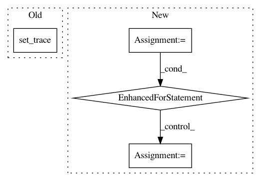

fd8ca0c975e380dfcd7239408258b5852be33f06,niftynet/engine/sampler_grid.py,GridSampler,layer_op,#GridSampler#,54
Before Change
break
image_sizes = {
name: data[name].shape for name in self.window.fields}
import pdb; pdb.set_trace()
coordinates = rand_spatial_coordinates(
image_id, image_sizes,
self.window.shapes, self.window.n_samples)
// initialise output dict
After Change
static_window_shapes = self.window.match_image_shapes(image_shapes)
coordinates = grid_spatial_coordinates(
image_id, image_shapes, static_window_shapes, self.border_size)
n_locations = coordinates.values()[0].shape[0]
for i in range(n_locations):
// initialise output dict
output_dict = {}
for name in list(data):
assert coordinates[name].shape[0] == n_locations, \
"different number of grid samples from the input" \
"images, don"t know how to combine them in the queue"
x_, y_, z_, _x, _y, _z = coordinates[name][i, 1:]
try:
image_window = data[name][x_:_x, y_:_y, z_:_z, ...]
except ValueError:
tf.logging.fatal(
"dimensionality miss match in input volumes, "
"please specify spatial_window_size with a "
"3D tuple and make sure each element is "
"smaller than the image length in each dim.")
raise
// fill output dict with data
coordinates_key = self.window.coordinates_placeholder(name)
image_data_key = self.window.image_data_placeholder(name)
output_dict[coordinates_key] = coordinates[name][[i], ...]
output_dict[image_data_key] = image_window[np.newaxis, ...]
yield output_dict
def grid_spatial_coordinates(subject_id, img_sizes, win_sizes, border_size):
This function generates all coordinates of feasible windows, with
step sizes specified in grid_size parameter
In pattern: SUPERPATTERN
Frequency: 3
Non-data size: 4
Instances
Project Name: NifTK/NiftyNet
Commit Name: fd8ca0c975e380dfcd7239408258b5852be33f06
Time: 2017-08-12
Author: wenqi.li@ucl.ac.uk
File Name: niftynet/engine/sampler_grid.py
Class Name: GridSampler
Method Name: layer_op
Project Name: NifTK/NiftyNet
Commit Name: e9fb47f90dacd64ee9bfe7aafca59b5ff75e739f
Time: 2017-08-13
Author: wenqi.li@ucl.ac.uk
File Name: niftynet/engine/input_buffer.py
Class Name: InputBatchQueueRunner
Method Name: _push
Project Name: NifTK/NiftyNet
Commit Name: eeb1ac0da37e40b121be49fd7c47f75c3247bb40
Time: 2017-08-28
Author: wenqi.li@ucl.ac.uk
File Name: tests/application_driver_test.py
Class Name: ApplicationDriverTest
Method Name: test_multi_device_inputs